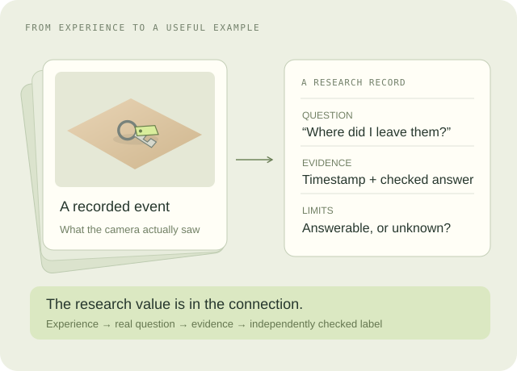

Compare with a baseline.
Try an existing video model and retrieval system first. Collect the failures that extra data could actually improve.
RESEARCH OUTPUTS / DATA NOTEBOOK
Useful research data connects experience to a question we can test. This sample shows one memory record; future studies could add goals, interventions, corrections, and verified outcomes.
THE CONNECTION IS THE RESEARCH
Pair it with a real question, a checked answer, and the limits of what was observed. Include missing evidence as deliberately as successful recall.

A MOMENT WITH CONTEXT

Sample morning · 08:42
Visible in the frameA QUESTION SOMEONE CARES ABOUT
“Where did I leave my keys?”
The question reveals the need. A glance alone doesn’t tell us someone’s intent.
AN ANSWER YOU CAN CHECK
Your keys were last seen on the kitchen table, near your notebook.
Does that match the scene?
WHAT WOULD MAKE THIS VALUABLE?
Would these examples reveal failures or improve a model on people and situations it has not seen? That evidence would give a dataset a reason to exist.
Try an existing video model and retrieval system first. Collect the failures that extra data could actually improve.
Correct answers, unsupported guesses, and time spent finding an object. Evaluate on people and scenes outside the training set.
Compare the same task with and without gaze. Keep it only if it adds enough value to justify collecting it.
RESEARCH TO EXPLORE
Everyday recordings and visual memory are already active research areas.
A POSSIBLE BUSINESS MODEL
The lab could license original training data, provide independently held-out evaluations, or develop specialized models. These are possible outputs, not offers or claims of buyer demand.
A clear task, reliable labels, useful coverage, permissions suited to the intended use, and evidence that the data adds value. More footage alone would not establish that.
Methods, sample records, and benchmark findings could be public while permissioned datasets use a separate license. No participant recordings or licensed research data exist in this project yet.